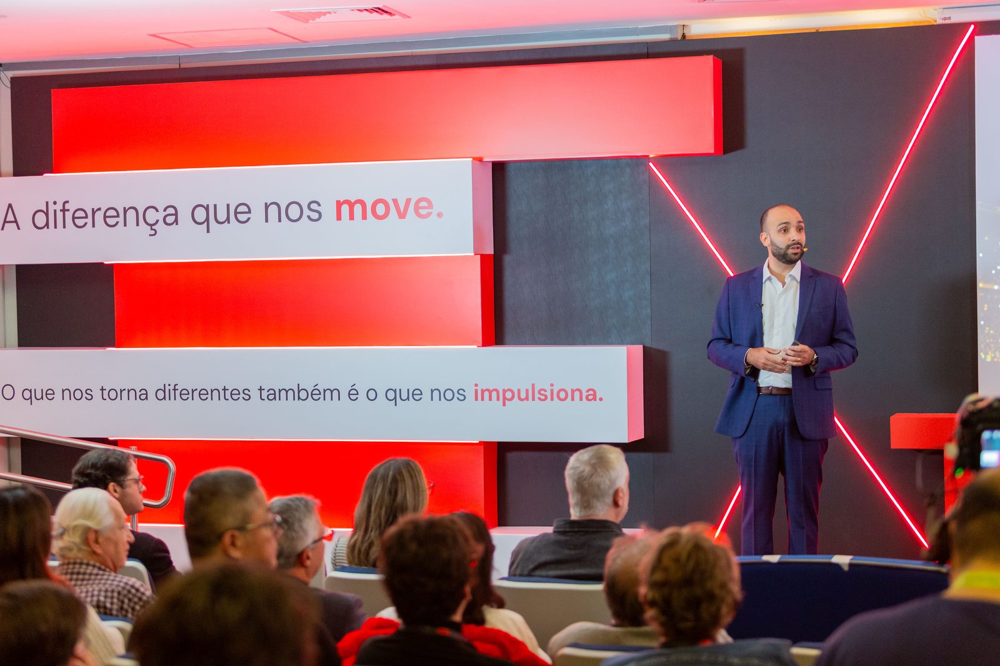
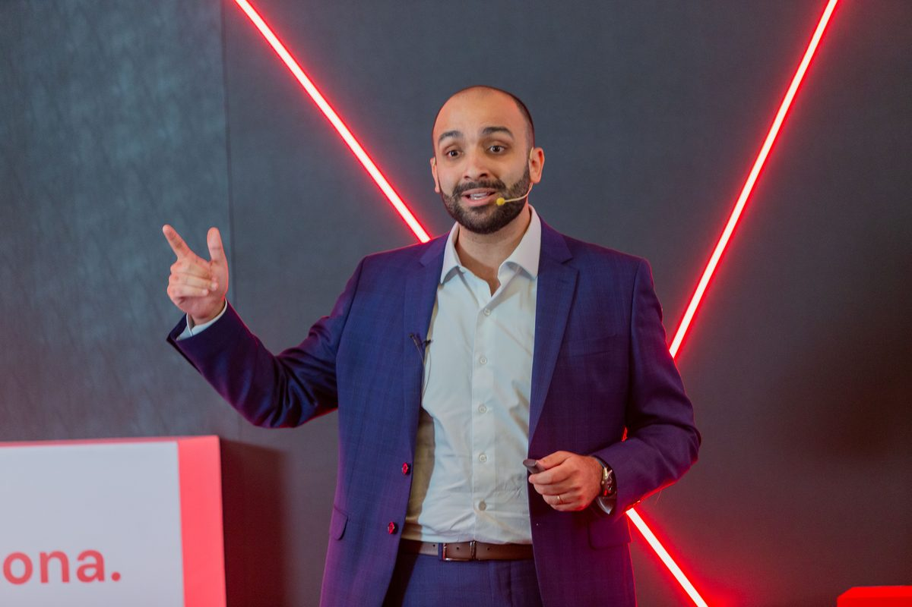

Um treinamento de engenharia comportamental para profissionais tecnicamente excelentes que querem transformar competência em influência, reconhecimento e crescimento de carreira.
Você domina a técnica, entrega mais do que muitos ao seu redor — e mesmo assim vê colegas menos preparados tecnicamente sendo promovidos porque "sabem se posicionar". Injusto? Talvez. Mas é assim que o jogo corporativo funciona. A boa notícia: as regras desse jogo podem ser aprendidas.

Nada de motivação vazia. Cada pilar entrega protocolos práticos — o "como fazer", passo a passo — baseados em neurociência, psicologia comportamental e métodos como o Negotiation Mastery, da Harvard Business School Online.
Autoconhecimento, Controle Emocional e Execução. Locus de controle, antifragilidade e gestão de gatilhos para performar sob pressão — sem caminhar para o burnout.
Comunicação, Influência e Negociação. Traduzir jargão técnico em valor de negócio, ler perfis comportamentais (DISC) e negociar prazos e recursos com o Método Harvard.
Rede, Política e Execução. Ler o cenário real (organograma vs. sociograma), mapear stakeholders, priorizar com a Matriz de Eisenhower e executar o Contrato de 90 Dias.

Economista formado pelo Insper, com mais de uma década no mercado financeiro — do Private Banking (HSBC e Bradesco) à gestão de relacionamento com as maiores instituições de investimento do Brasil em uma gestora global. Vivência diária no jogo corporativo de alta pressão que o método ensina a dominar.
Palestrante TEDx. Método já aplicado em seguradoras, empresas de investimento e instituições de ensino de primeira linha — agora pela primeira vez em turma aberta.
Sábado, 12 de setembro de 2026 · Presencial em São Paulo · 9h às 17h
09h Início · 12h–13h Almoço · 15h30–16h Café e networking · 17h Encerramento
Local confirmado diretamente com os inscritos
Turma limitada a 25 participantes para garantir prática individualizada e feedback direto.